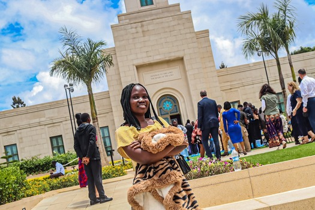

My Experience and testimony- Nairobi Kenya temple
Hello! I'm Akwero Sophia,from kampala uganda, am excited to share my testimony of touring the nairobi kenya newly built temple with you all. i want to first share what l felt when l saw the image below. The Image of the Savior in His Holy House One of the most moving moments during a temple visit is when you come face to face with a beautiful image of the Savior, Jesus Christ. Whether it’s a painting of Him surrounded by children, teaching with love in His eyes, or standing in glorious resurrection—His image in the temple speaks to the soul. In these sacred halls, His presence is felt, and His image is a gentle reminder of who the temple truly belongs to. It is His house. A place of peace, healing, and eternal promise. Seeing His face reminds us that He knows us personally, that He invites us to come unto Him, and that through Him, all things are made possible.
A Day I Will Always Treasure
Attending the open house of the Nairobi Kenya Temple was one of the most sacred and joyful experiences of my life. From the moment I stepped onto the temple grounds, I felt an overwhelming sense of peace and reverence. The beauty of the temple, both outside and within, was truly breathtaking. Every detail—from the carefully designed architecture to the peaceful gardens—reflected a feeling of holiness and love. As we walked through each room, I was touched by the quiet spirit that filled the entire building. Though no ordinances were being performed yet, the presence of the Lord was unmistakable. I felt calm, hopeful, and deeply grateful to be there. Seeing people from all walks of life, including fellow Saints from Uganda and Kenya, coming together to witness this special moment was inspiring. The unity, the smiles, and the shared testimonies reminded me that we are truly one great family under God. This visit strengthened my testimony of temples and of the eternal nature of the gospel. I felt the love of Jesus Christ in every corner, and I left feeling uplifted, renewed, and more committed to follow Him. 💛 .
